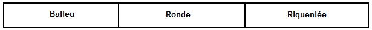

Suite de Loudéac dansée par des Japonais de Bretagne
L'avis d'un spécialiste, M. Padrig Kobis:
"Ces danseurs japonais, hélas, ne savent pas danser du tout le Rond de Loudéac.
Tout y est faux : le pas, la distance, le rond de la ronde...
Ce sont des élèves débutants qui ne connaissent manifestement pas cette danse.
Cette vidéo ne peut servir que de contre-exemple pour mettre en garde sur ce qu'il ne faut pas faire !"
L'avis d'un béotien (Christian Souchon):
"Cette vidéo montre, cependant, qu'on peut vouloir apprendre les danses bretonnes, même si l'on n'est pas Breton et tout en s'amusant!"

Suite de Loudéac (sans la première ronde) jouée par Alain Pennec
L'avis de M.Kobis:
"Sur cette seconde vidéo, on voit la danse menée à l'accordéon. A l'origine cette danse se menait
exclusivement à la voix
. Est-ce la raison qui explique que
les danseurs reculent
dans le bal. Ce devrait être exclu...
Je ne peux même pas faire la liste de toutes les autres erreurs...
Petite précision sur le Loudéac. Pourquoi y a-t-il une suite de
quatre danses
?
Il s'agissait d'un rond suivi d'un bal simplement... mais il y avait deux "pays" qui dansaient la ronde de la même façon, mais le bal très différemment. Pour les "réconcilier", on a pris l'habitude de les danser successivement:
- le rond et le baleu d'abord, pour les natifs du premier pays,
- le même rond et la riqueniée ensuite, pour les autres.
C'est pourquoi cela n'a aucun sens de danser une suite rond-bal-rond sans riqueniée après, par confusion avec le
trihori
de Basse-Bretagne..."
[En l'occurrence, c'est la 1ère ronde qui manque, sur la vidéo tout au moins.]
M. Kobis recommande aux apprentis danseurs d'assister au
Printemps de Châteauneuf
(dimanche de Pâques) "où se retrouvent tous les bons danseurs du Finistère et du Kreizh-Breizh...
C'est le plus grand rendez-vous de l'année, plus que le festival fisel de fin août ou la soirée de la Saint-Sylvestre..."